Aktuálna ponuka
Nehnuteľnosti, ktoré ponúkam
21 nehnuteľností na predaj a prenájom. Vyberte typ, alebo napíšte lokalitu.
21 z 21 ponúk
 Byt10
135 000 €Bezbariérový 1-izbový byt v obľúbenej lokalite Muškát
Pezinok
1-izbový30 m²
Licencovaná realitná kancelária ORIN REAL ponúka na predaj príjemný, kompletne zariadený 1-izbový byt vo vyhľadávanej lokalite Pezinka, na sídlisku…
Byt10
135 000 €Bezbariérový 1-izbový byt v obľúbenej lokalite Muškát
Pezinok
1-izbový30 m²
Licencovaná realitná kancelária ORIN REAL ponúka na predaj príjemný, kompletne zariadený 1-izbový byt vo vyhľadávanej lokalite Pezinka, na sídlisku…
 Byt10
239 990 €Atraktívna nadstavba 3. izb. bytu v centre mesta
Pezinok
3-izbový67.37 m²5. podlažie
Licencovaná realitná kancelária ORIN REAL ponúka na predaj priestranný a svetlý 3-izbový byt vo vyhľadávanej lokalite Pezinok – Moyzesova ulica. Táto…
Byt10
239 990 €Atraktívna nadstavba 3. izb. bytu v centre mesta
Pezinok
3-izbový67.37 m²5. podlažie
Licencovaná realitná kancelária ORIN REAL ponúka na predaj priestranný a svetlý 3-izbový byt vo vyhľadávanej lokalite Pezinok – Moyzesova ulica. Táto…
 Rodinné domy10
739 000 €Rodinný dom s bazénom a saunou takmer v centre Pezinka
Pezinok
4-izbový300 m²
Licencovaná realitná kancelária ORIN REAL Vám exkluzívne ponúka na predaj výnimočnú rodinnú vilu s bazénom vo vyhľadávanej lokalite Pezinok –…
Rodinné domy10
739 000 €Rodinný dom s bazénom a saunou takmer v centre Pezinka
Pezinok
4-izbový300 m²
Licencovaná realitná kancelária ORIN REAL Vám exkluzívne ponúka na predaj výnimočnú rodinnú vilu s bazénom vo vyhľadávanej lokalite Pezinok –…
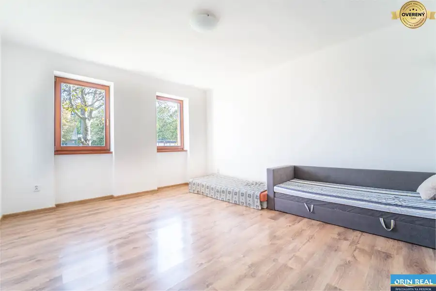
Rodinné domy10 550 000 €RD po rekonštrukcii spolu so stavebným pozemkom na druhý dom Pezinok 3,5180 m² Licencovaná realitná kancelária ORIN REAL ponúka exkluzívne na predaj zrekonštruovaný rodinný dom s rozľahlým pozemkom, na ktorom podľa aktuálnej UPI…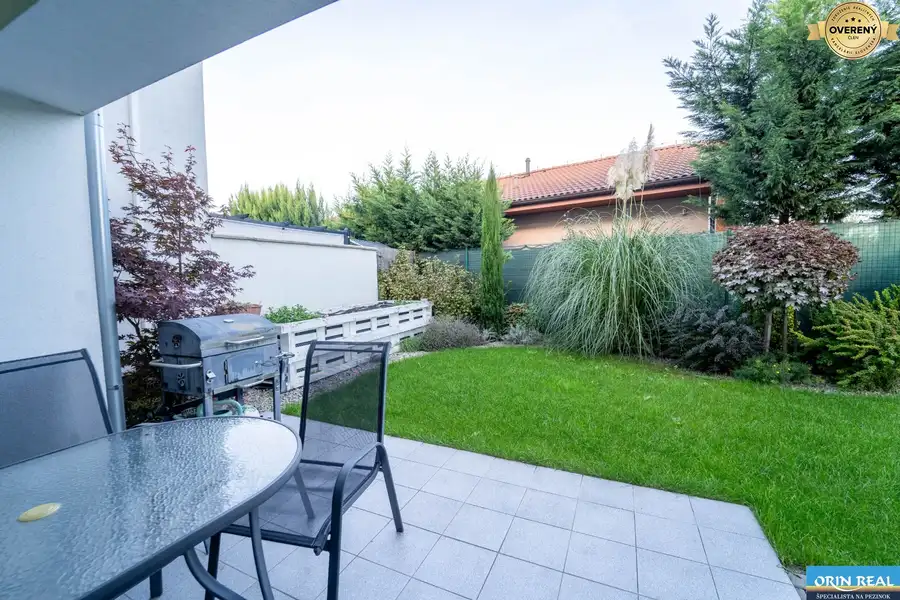
Byt10 212 000 €Atraktívny 2 izbový byt s vlastnou záhradkou a 3 parkovacími miestami Senec 2-izbový67 m² Licencovaná realitná kancelária ORIN REAL ponúka na predaj moderný, priestranný a svetlý 2-izbový byt s očarujúcou súkromnou záhradou v meste Senec,…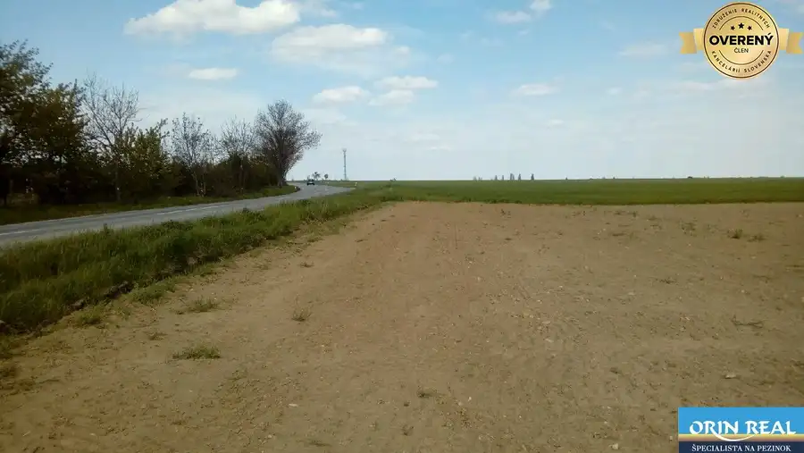
Pozemok 21 700 €PREDAME ORNU pôdu pri Budmericiach Vištuk 4340 m² LICENCOVANÁ realitná kancelária ORIN REAL predá ornú pôdu v katastrálnom území Vištuk, cca 3 km od Budmeríc. Na pozemok je prístup priamo z hlavnej…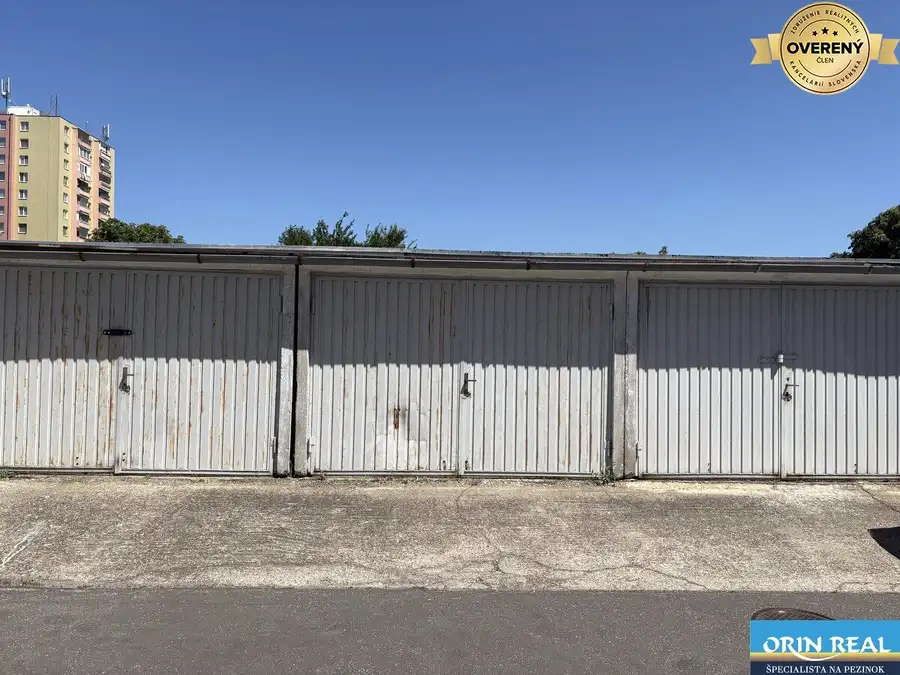
Ostatné4 37 500 €GARÁŽ s elektrikou v uzatvorenom areály na JUHu Pezinok 18 m² Garáž sa nachádza v bezpečnom uzavretom dvore s pohodlným prístupom cez bránu na diaľkové ovládanie. K dispozícii je aj príjazdová cesta, čo…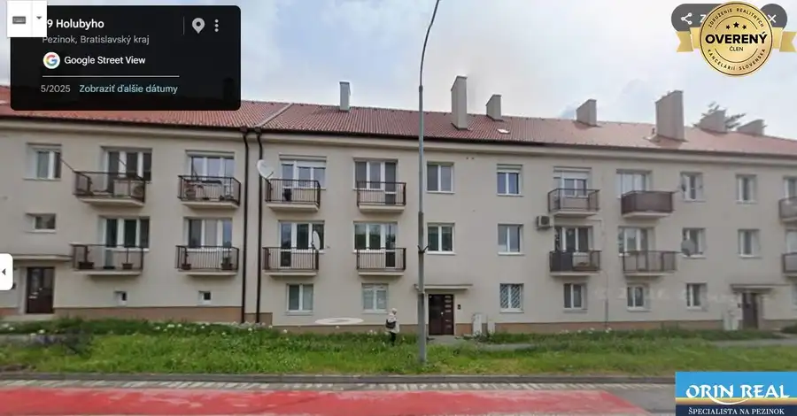
Byt10 199 000 €Tehlový 2 izbový byt priamo v centre Pezinok 2-izbový64 m² Licencovaná realitná kancelária ORIN REAL ponúka na predaj priestranný 2-izbový byt s výmerou 64 m², ktorý sa nachádza na Holubyho ulici 46, priamo v… Rodinné domy
539 900 €Pripravujeme- výnimočný 6-izbový RD v prostredí viníc
Modra
6-izbový366 m²
LICENCOVANÁ RK ORINREAL ponúka na predaj kvalitne a moderne postavený samostatne stojaci rodinný dom z roku 2017 v tichej časti Modry – pri uliciach…
Rodinné domy
539 900 €Pripravujeme- výnimočný 6-izbový RD v prostredí viníc
Modra
6-izbový366 m²
LICENCOVANÁ RK ORINREAL ponúka na predaj kvalitne a moderne postavený samostatne stojaci rodinný dom z roku 2017 v tichej časti Modry – pri uliciach…
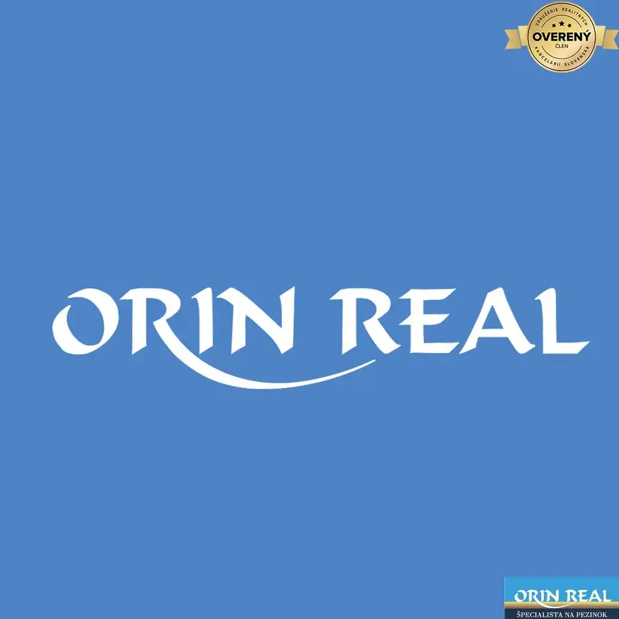
Nebytové priestory 1 100 €Obchodný priestor v absolútnom centre Pezinka s výkladom do ulice Pezinok 75 m² LICENCOVANÁ realitná kancelária ORIN REAL s.r.o. vám ponúka na dlhodobý prenájom výnimočný obchodný priestor o výmere 75 m², situovaný priamo v srdci…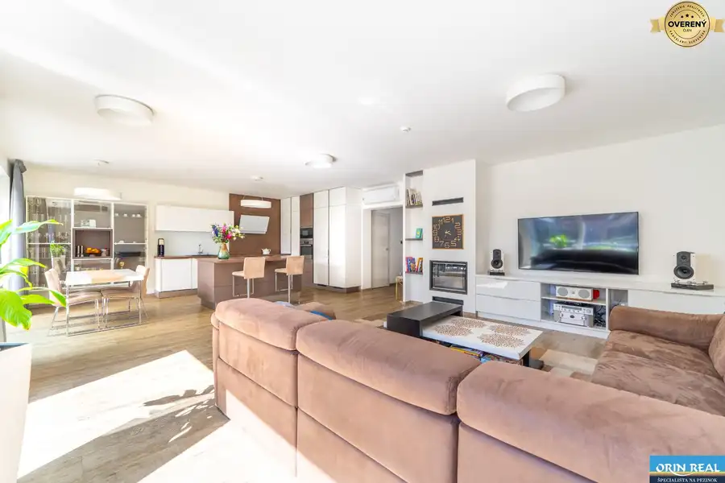
Rodinné domy10 950 000 €Moderný 6-izbový rodinný dom v blízkosti Kuchajdy | Zatišie | Nové Mesto, Bratislava 6-izbový300 m² LICENCOVANÁ RK ORINREAL ponúka na predaj reprezentatívny rodinný dom v radovej zástavbe na ulici Zátišie – v jednej z najobľúbenejších rezidenčných… Byt Cena dohodouHľadáme byty na prenájom Pezinok 1-izbový LICENCOVANÁ realitná kancelária ORIN REAL hľadá pre svojich konkrétnych klientov byty na prenájom v Pezinku a blízkom okolí. Za Vaše ponuky vopred… Byt
Cena dohodouHľadáme byty na prenájom
Pezinok
2-izbový
LICENCOVANÁ realitná kancelária ORIN REAL hľadá pre svojich konkrétnych klientov byty na prenájom v Pezinku a blízkom okolí. Za Vaše ponuky vopred…
Byt
Cena dohodouHľadáme byty na prenájom
Pezinok
2-izbový
LICENCOVANÁ realitná kancelária ORIN REAL hľadá pre svojich konkrétnych klientov byty na prenájom v Pezinku a blízkom okolí. Za Vaše ponuky vopred…
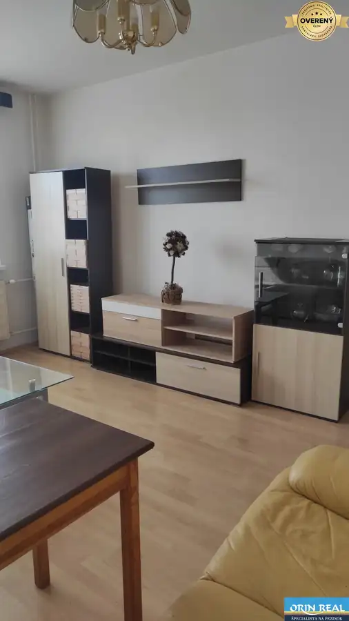
Byt10 Cena dohodouZariadený 3 izb. byt na Severe Pezinok 3-izbový68 m²6. podlažie Byt sa nachádza na 6. poschodí bytového domu a ponúka príjemné a praktické bývanie v obľúbenej lokalite s kompletnou občianskou vybavenosťou v…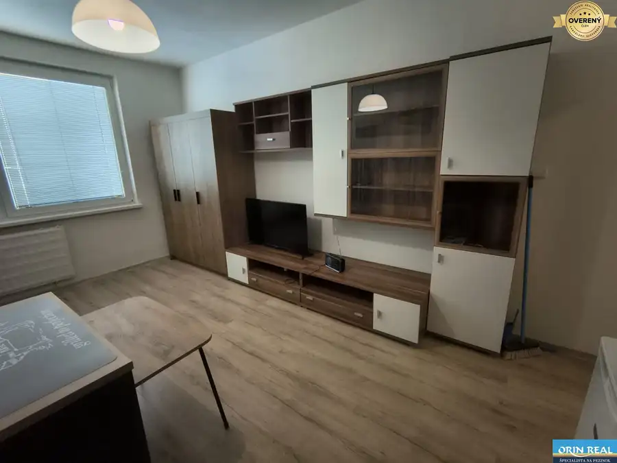
Byt10 Cena dohodouKomplet zariadená Garsónka pri plavárni Pezinok 1-izbový24 m²2. podlažie LICENCOVANÁ realitná kancelária ORIN REAL Vám ponúka na prenájom kompletne zariadenú zrekonštruovanú garsónku na vyhľadávanej ulici 1. mája, v… Ostatné
Cena dohodouGarážové miesto v novostavbe na mýtnej
Pezinok
18 m²
Bližšie info: www.lenkakravarcikova.sk
Ostatné
Cena dohodouGarážové miesto v novostavbe na mýtnej
Pezinok
18 m²
Bližšie info: www.lenkakravarcikova.sk
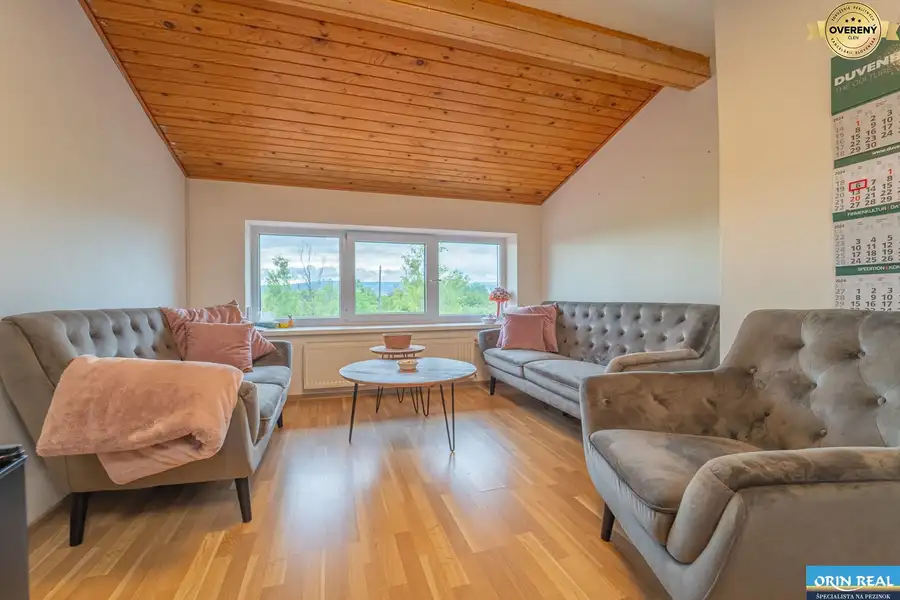
Nebytové priestory4 Cena dohodouModerný kancelársky priestor na prenájom Pezinok 1-izbový22 m²1. podlažie Nachádza sa na Šenkvickej ulici v Pezinku Výmera - 22 m2 K priestoru prislúcha Spoločná kuchynka a toalety Cena- cca: 230,-EUR vrátane energií a dph… Byt Cena dohodouVeľký 3 izb. byt s garážovým státím - Muškát Pezinok 3-izbový115 m² Licencovaná realitná kancelária ORIN REAL ponúka na prenájom nadštandardne priestranný 3-izbový byt s dvomi loggiami, garážovým státím a veľkou…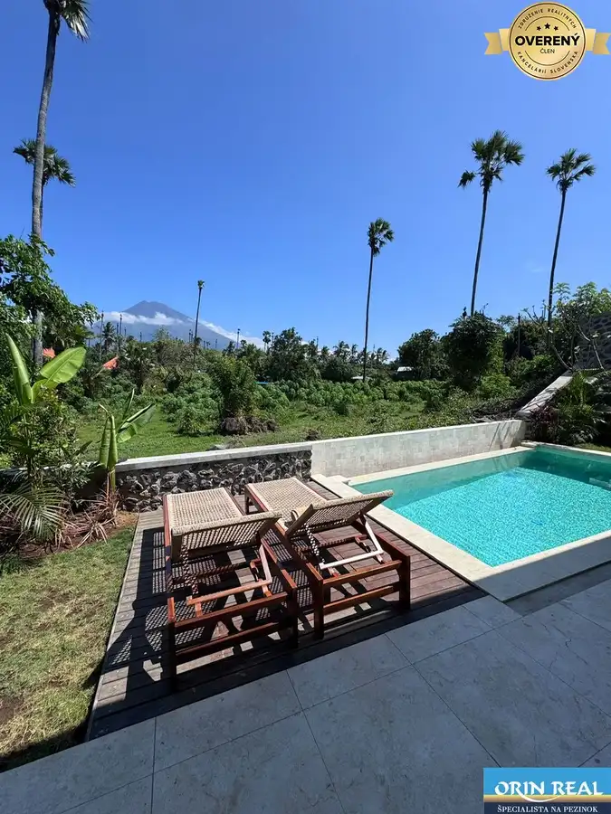
Rodinné domy10 290 000 €Vila Aura – free hold vlastníctvo s Priamym výhľadom na sopku Agung São Mamede de Infesta, Amed 3-izbový118 m² Novostavba z roku 2025 postavená ako eco projekt bez chémie, s pitnou vodou v celom objekte – áno, aj v sprche aj v bazéne. Dom, kde kvalita nie je…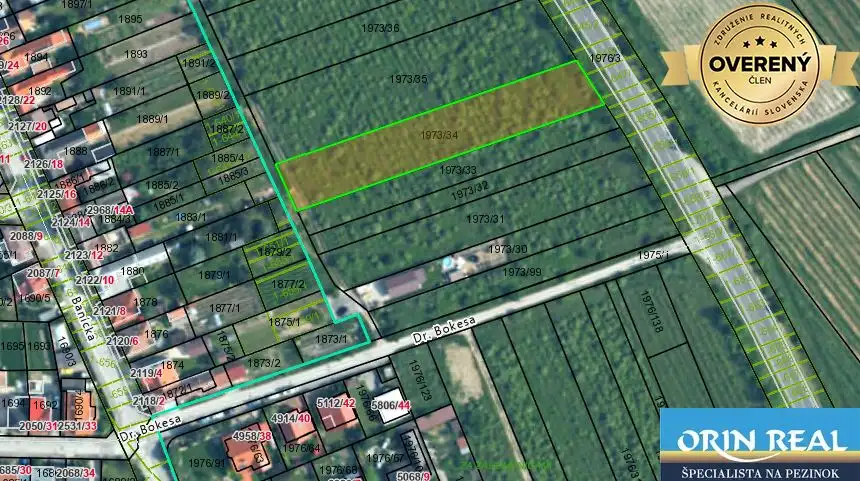
Pozemok3 301 875 €Výborná investícia - pozemok určený na výstavbu RD Pezinok 2625 m² Licencovaná realitná kancelária ORIN REAL ponúka na predaj atraktívny pozemok o výmere 2 625 m² vedený ako vinica, nachádzajúci sa v blízkosti…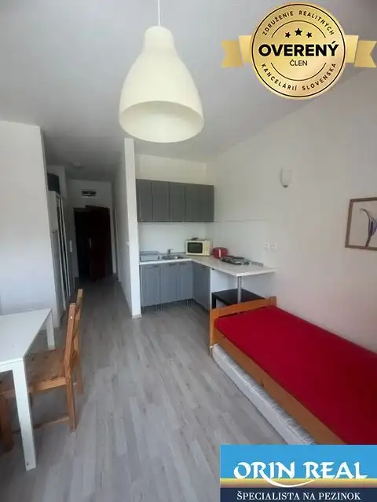
Byt8 Cena dohodouMALÁ GARSÓNKA pre nenáročného klienta Pezinok 1-izbový23 m²1. podlažie Licencovaná realitná kancelária ORIN REAL ponúka na dlhodobý prenájom menšiu, skromnejšie zariadenú garzónku vhodnú pre nenáročného klienta. Garzónka…Tomuto výberu zatiaľ nezodpovedá žiadna ponuka. Napíšte mi, čo hľadáte.
Hľadám pre klientov